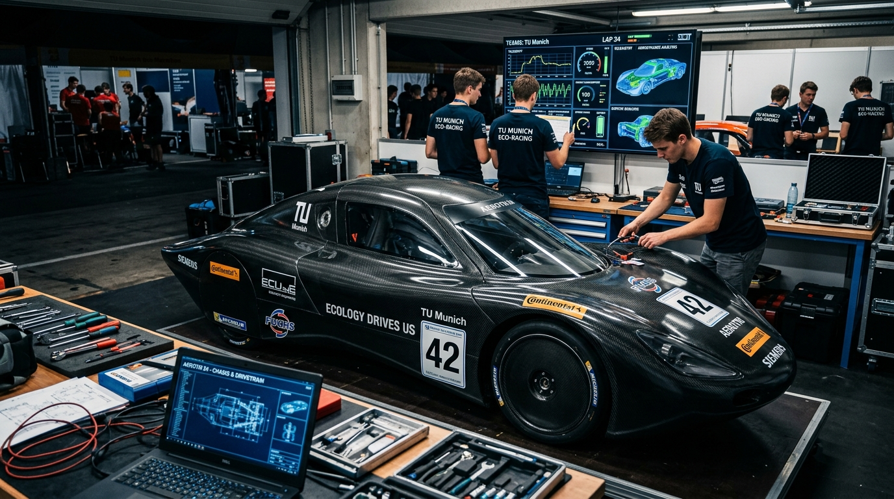

1. Thông tin mô-đun thực hành
2. Thiết bị xưởng & Dụng cụ chuyên dụng
- Cầu nâng 2 trụ thủy lực có chốt khóa an toàn cơ khí.
- Đồng hồ so kèm đế từ: Đo độ đảo mặt đĩa phanh (Brake rotor runout).
- Thước cặp đo độ dày: Đo độ dày đĩa phanh và độ mòn má phanh (Brake pads).
- Dụng cụ ép piston phanh đĩa (Brake caliper tool) và bình thu hồi dầu phanh thải.
- Bộ cảo rotuyn lái và cảo vòng bi moay-ơ bánh xe.

Kiểm tra gầm & Dẫn động thực tế
Em thực hành kiểm tra độ rơ của bạc đạn moay-ơ, kiểm tra rách chụp bụi láp dẫn động và tham gia hoàn thiện hệ thống lái cho mô hình xe sinh viên.
3. Nhật ký các bước bảo dưỡng hệ thống phanh
Kê cầu nâng vào đúng 4 vị trí chịu lực dưới bệ gầm xe theo hướng dẫn hãng. Tháo bánh xe, tháo chốt trượt cùm phanh (Slide pins), treo cùm phanh bằng dây móc để tránh làm căng đứt ống dầu mềm.
Làm sạch gỉ sét bề mặt, gắn đế từ đồng hồ so lên càng chữ A, xoay đĩa phanh chậm 1 vòng để ghi nhận độ đảo:
| Hạng mục kiểm tra | Tiêu chuẩn giới hạn | Số liệu đo thực tế | Đánh giá |
|---|---|---|---|
| Độ dày đĩa phanh trước | Tối thiểu > 22.0 mm | 24.3 mm | Còn tốt |
| Độ đảo mặt đĩa phanh | Cho phép < 0.05 mm | 0.03 mm | Không cong vênh |
| Độ dày má phanh còn lại | Tối thiểu > 2.0 mm | 7.5 mm | Chưa cần thay |
Vệ sinh sạch mạt kim loại trên phe gài má phanh bằng chai xịt Brake Cleaner. Tra mỡ chuyên dụng chịu nhiệt cho chốt trượt để cùm phanh ép nhả tự do. Tiến hành xả gió dầu phanh theo thứ tự từ bánh xa tổng phanh nhất đến bánh gần nhất (Sau Phải ➔ Sau Trái ➔ Trước Phải ➔ Trước Trái).
4. Bài học kinh nghiệm
Hệ thống phanh và gầm liên quan trực tiếp đến tính mạng của người sử dụng xe. Em học được thái độ làm việc tuyệt đối không được chủ quan, luôn kiểm tra lại lực siết bulong bánh xe bằng cần xiết cân lực trước khi hạ cầu nâng giao xe.